My family has played a crucial role in my life, providing care,
support, and guidance throughout my journey.
They have been instrumental in my education, offering assistance
and encouragement to help me achieve my academic goals.
Moreover, their unwavering support has empowered me to pursue my
passions and interests, allowing me to make my own
decisions and chart my own path. My family has also imparted valuable life lessons,
teaching me about my limits and guiding me on what
actions to take or avoid. While they have offered guidance, i ultimately have
the autonomy to decide my own path, empowered by the
lessons and values instilled by my family. My family's love, care,
and guidance have been foundational in shaping who
i am today, instilling within me the confidence and independence
to navigate life's challenges and opportunities.
MY FRIENDS
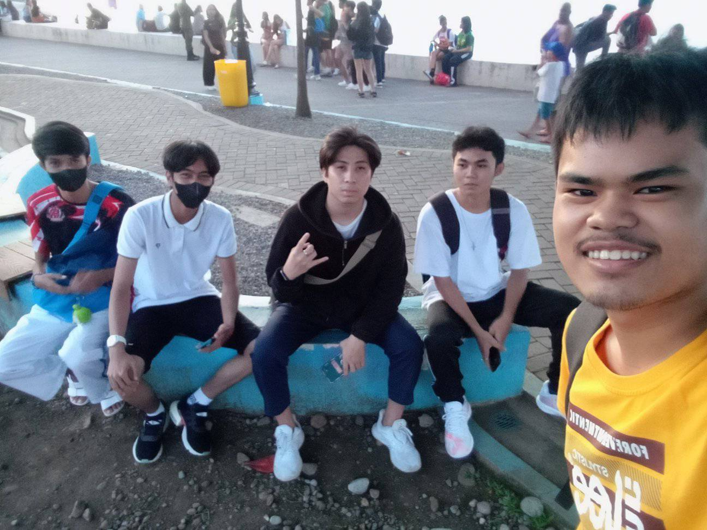
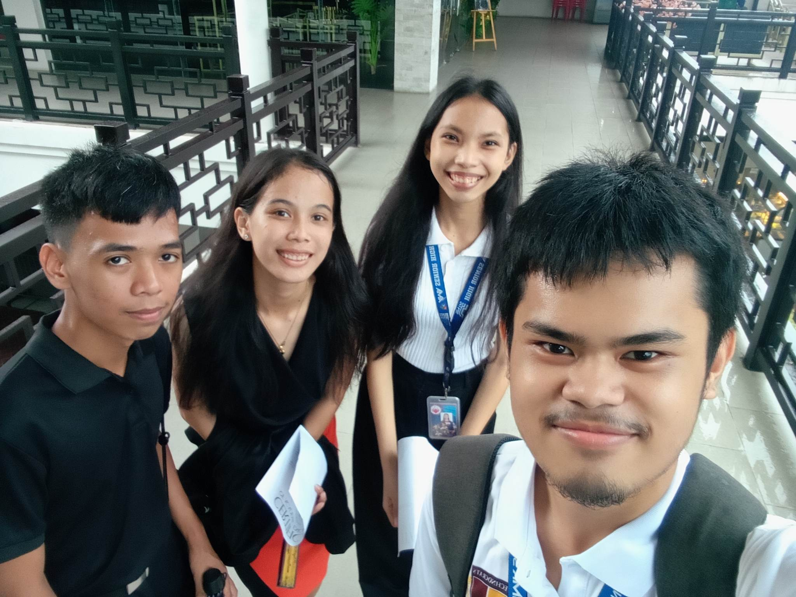
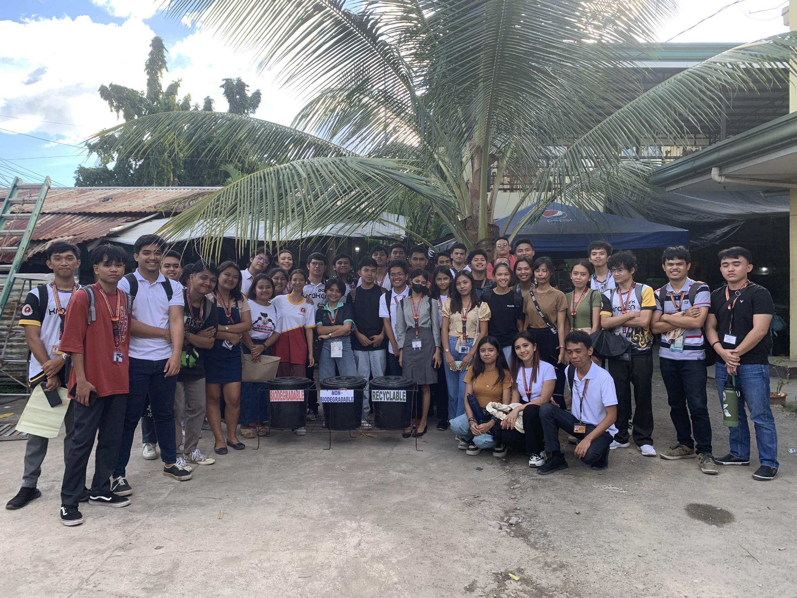
Starting from childhood and continuing into adulthood.
Playing and fighting with them as kids likely forged a
strong bond rooted in shared experiences and the development
of interpersonal skills like conflict resolution
and cooperation. As i grow older, i've had the opportunity
to meet new friends, expanding my social circle and
enriching my life with diverse perspectives and personalities.
Feeling admiration for my friends suggests a deep
appreciation for their qualities, achievements, or character
traits that i admire and aspire to emulate. Alongside the
joys of friendship, we've experienced hardship together.
Facing challenges as a group can strengthen bonds and deepen
connections, as you rely on each other for support, encouragement,
and understanding during difficult times.
I WATCH
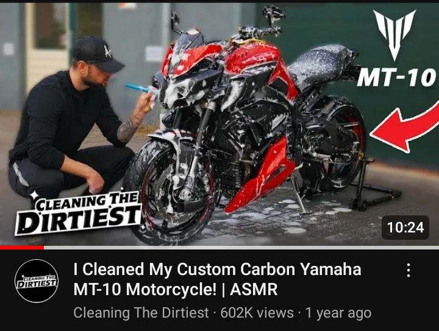
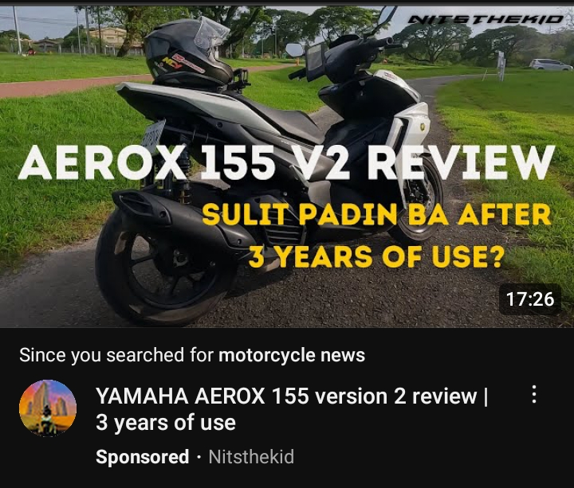
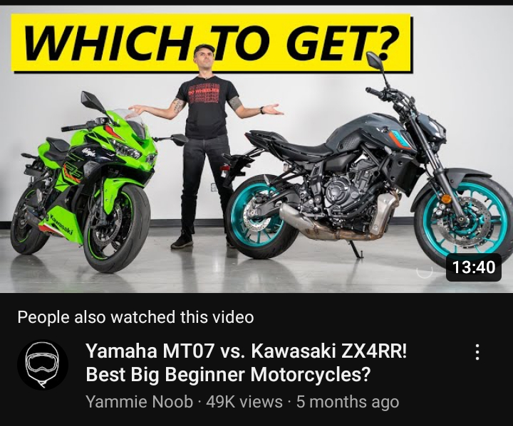
I enjoy watching a variety of motorcycle-related content on YouTube,
ranging from videos featuring the latest or newest
motorcycles to those showcasing motorcycles that align with my personal taste.
Im also interested in tutorials or guides on how to
fix vehicles, as well as videos demonstrating off-road driving experiences and
vehicle cleaning sessions
I PLAY
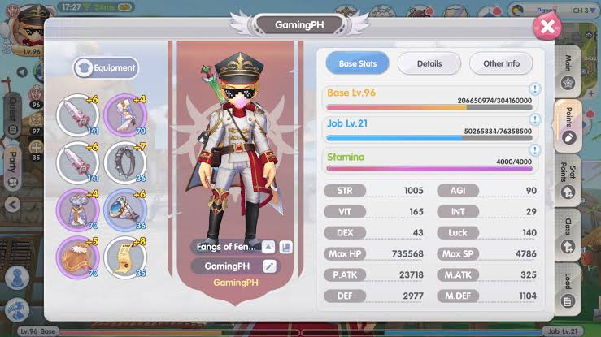
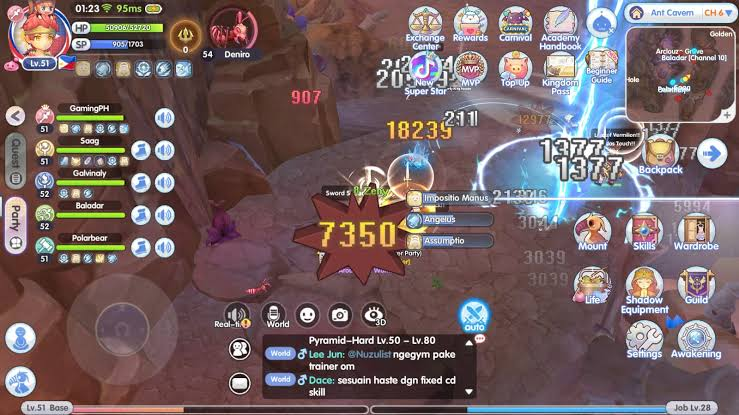
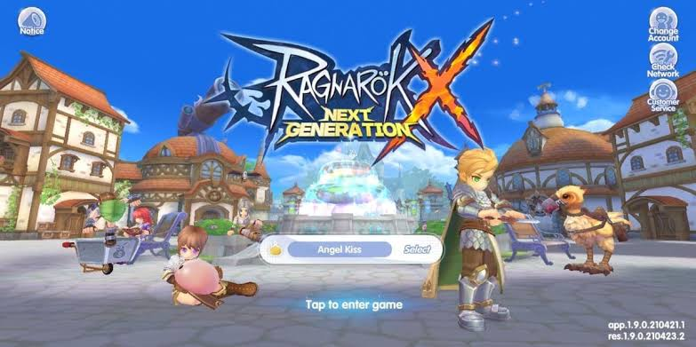
Ragnarok X Generation Online is an MMORPG
(Massively Multiplayer Online Role-Playing Game) based
on the popular Ragnarok franchise. In the game, players
can explore a vast virtual world, embark on quests, battle
monsters, and interact with other players in real-time.
MMORPGs like Ragnarok X Generation Online offer immersive
gameplay experiences where players can create and customize
their characters, join guilds, participate in
player-versus-player (PvP) combat, and engage in various
social activities within the game world.
I LISTEN
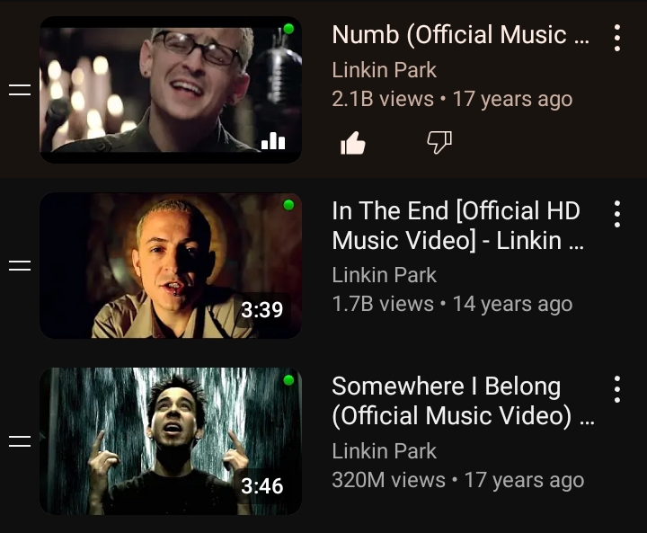
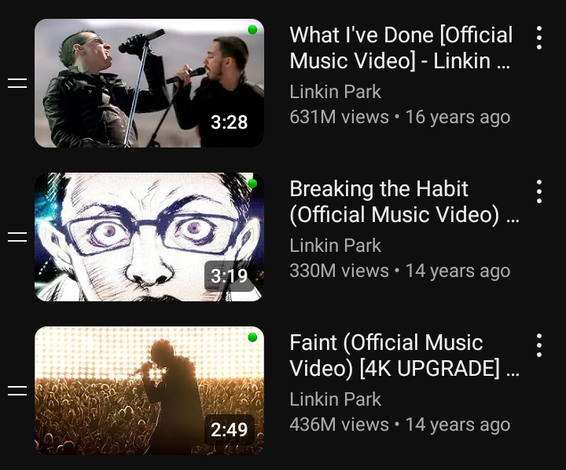
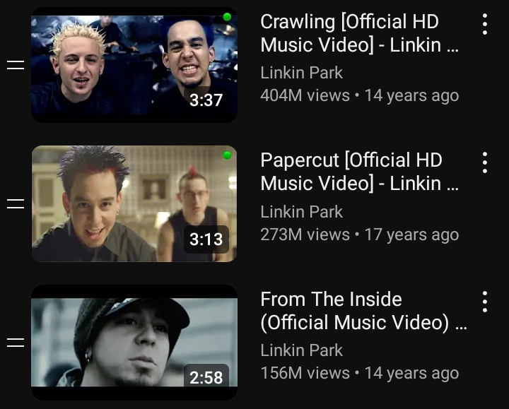
Linkin Park is a renowned band celebrated for their
distinctive blend of rock, metal, and electronic music.
With hits like "In the End" and "Crawling," they captivate
audiences worldwide with their emotive lyrics and powerful
performances, leaving an indelible mark on the music industry.